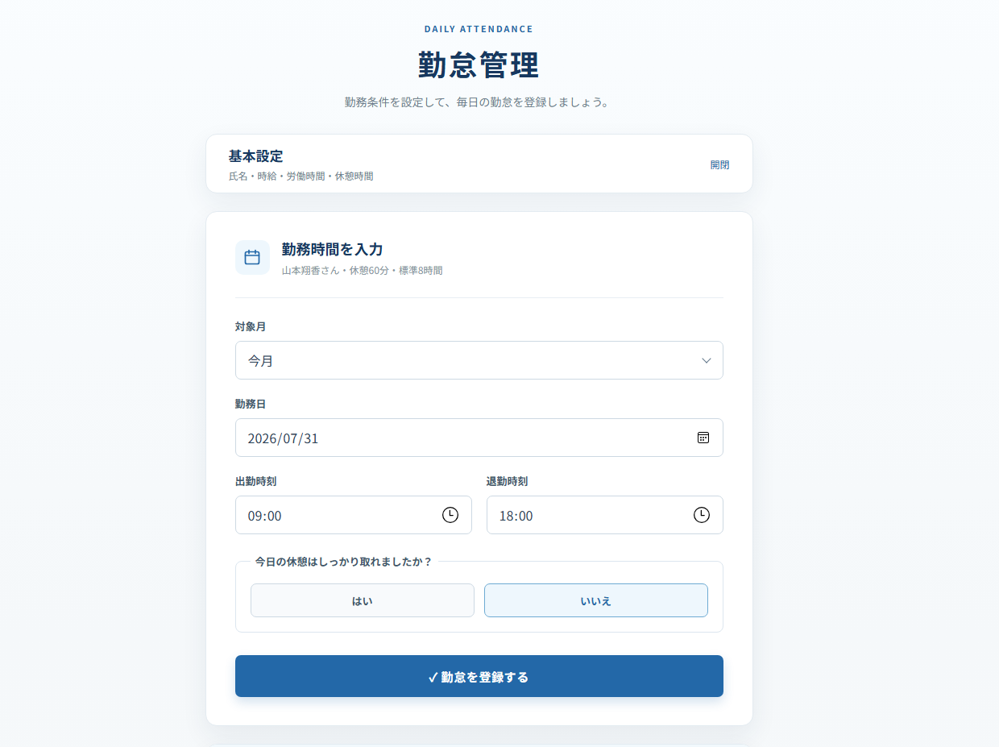

About Me
滋賀県在住。前職では事務職を経験し、業務上の課題をITで解決できる エンジニアを目指しています。現在はJavaとSpring Bootを中心に学習しています。
前職で感じた勤怠管理の課題をきっかけに、働いた時間と給与の概算を 自分で確認できる「勤怠・給与計算システム」を制作しました。
My Works
勤怠・給与計算システム

JavaとSpring Bootで制作した、個人向けの勤怠管理・給与概算Webアプリケーションです。 勤務時間の登録、実働・残業時間と給与の計算、月間集計、CSV保存に対応しています。
工夫した点
- 前職で感じた課題をもとに、働いた時間と給与を確認しやすい形にしました。
- PC操作が苦手な方でも迷いにくい、シンプルな入力画面を意識しました。
- 今月・前月を選んで登録でき、同じ日付・氏名のデータは上書きできるようにしました。
- 計算処理やCSV保存、月間集計にJUnitテストを追加しました。
Contact
ソースコードや学習内容は GitHubプロフィール からご覧いただけます。
応募に関するご連絡は、応募サービス内の連絡機能をご利用ください。